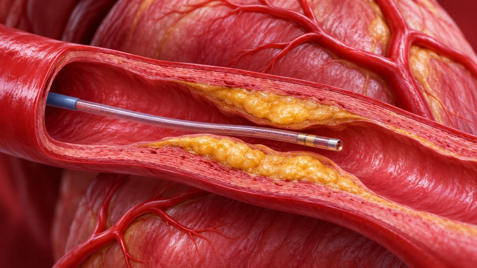
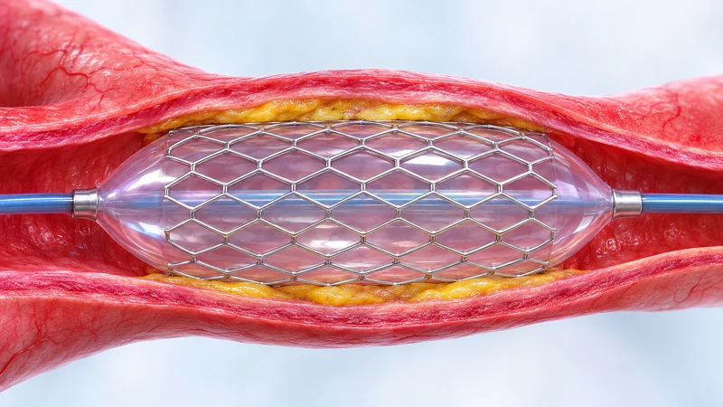
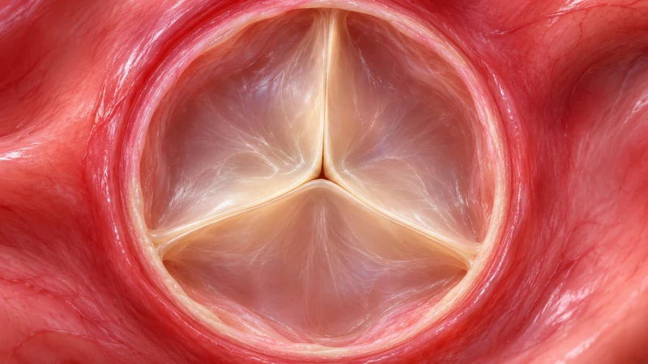
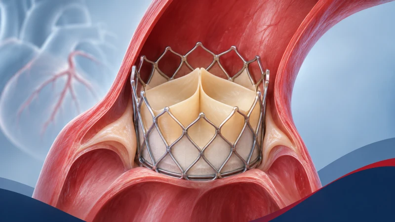
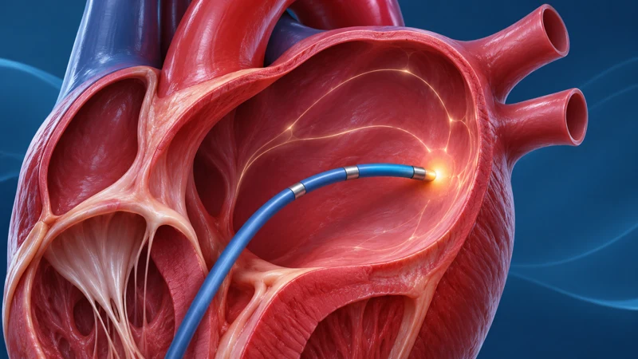
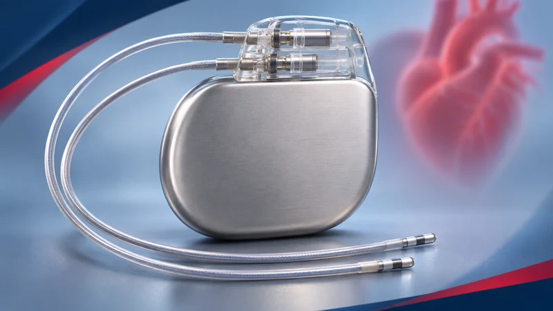
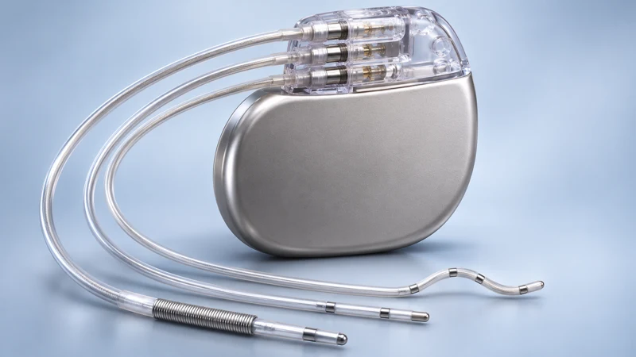
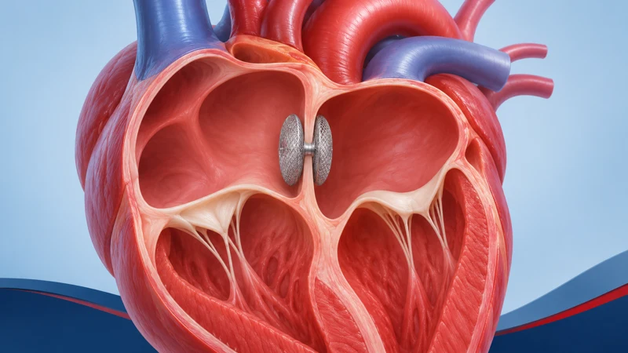
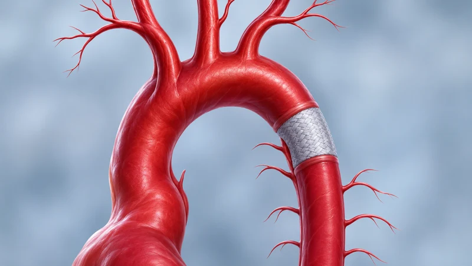

Procedures
Cardiac procedures,
clearly explained.
Learn what procedures such as angioplasty, bypass surgery and valve treatment are designed to address. Whether any procedure is suitable depends on an independent medical assessment.
- Plain-language procedure guides
- Independent medical decisions
- Clear, plain-language information
- Coordinated patient support
Your procedure library
Find the procedure you need.
Understand the purpose, what usually happens and the questions to discuss with your treating clinician.

Blocked arteries
Coronary angiography (CAG)
A catheter-based test that uses contrast imaging to show narrowing or blockage in the heart arteries. It does not automatically mean a stent is needed.
Read moreShow less
Diagnostic test
What it treats
Angiography is a test, not a treatment. It looks for narrowing or blockage in the coronary arteries, which supply blood to the heart muscle. It may be recommended when symptoms or other tests suggest reduced blood flow.
What usually happens
A thin tube (catheter) is passed through a blood vessel, often at the wrist or groin, to the heart arteries. Contrast dye is injected and X-ray images are recorded. The results help the cardiologist discuss whether medicine, a procedure or no further treatment is appropriate.
Questions to ask
- Why is this test recommended for me?
- If a narrowing is found, could treatment happen during the same procedure, and how would that be agreed with me first?
- Will I receive copies of the images and the report?
Care depends on a specialist assessment. Only your treating clinician can decide whether this test is right for you.

Blocked arteries
Angioplasty / stenting (PCI)
A balloon on a catheter widens a narrowed heart artery. A stent may be placed to help keep it open.
Read moreShow less
Catheter procedure
What it treats
Narrowed coronary arteries that reduce blood flow to the heart muscle.
What usually happens
A catheter is guided to the narrowed artery and a small balloon is inflated to widen it. A stent (a small mesh tube) may be left in place. Patients usually need medicines afterwards to help prevent clots, taken exactly as prescribed.
Questions to ask
- How many arteries and stents does the plan assume?
- Which stent type is proposed, and is it included in the estimate?
- Which medicines will I need afterwards, and for how long?
- When will it be appropriate for me to travel home?
Care depends on a specialist assessment. Whether angioplasty is suitable can only be decided after your records and test results are reviewed.
Bypass surgery Coronary artery bypass surgery (CABG) A surgeon uses a blood vessel from elsewhere in the body to create a route around blocked heart arteries. Read moreShow less
Heart surgery
What it treats
Blockages in the heart arteries, for example when several arteries are affected or when the heart team considers surgery a more suitable option than stenting.
What usually happens
Under general anaesthetic, the surgeon attaches a blood vessel (a graft) so blood can flow around the blockage. Recovery usually includes time in intensive care, then on a ward, and a period of recovery before long-distance travel.
Questions to ask
- How many grafts are planned?
- How many days in intensive care and in hospital does the estimate assume?
- What happens to the cost if my stay is longer?
- What rehabilitation and follow-up will I need at home?
Care depends on a specialist assessment. A cardiac surgeon must review your case before recommending surgery.

Heart valves
Heart valve repair or replacement
A specialist repairs a damaged valve or replaces it with an artificial valve when assessment supports that approach.
Read moreShow less
Surgery or catheter
What it treats
Heart valves that are narrowed or leaking and affecting how well the heart pumps blood.
What usually happens
Depending on the valve and the assessment, a specialist may repair your own valve or replace it with a mechanical or tissue valve. This is often done through heart surgery. Some valves can be treated with less invasive or catheter-based approaches.
Questions to ask
- Is repair or replacement recommended, and why?
- If replacement, what are the long-term differences between valve types for me?
- Which valve type does the estimate include?
- What follow-up checks will I need at home?
Care depends on a specialist assessment. The right approach depends on detailed imaging and a specialist’s judgement.

Heart valves
Transcatheter aortic valve treatment (TAVR/TAVI)
A replacement aortic valve is guided to the heart through a catheter. Suitability requires specialist assessment.
Read moreShow less
Catheter procedure
What it treats
Narrowing of the aortic valve in selected patients.
What usually happens
A collapsible valve is guided on a catheter, often from an artery in the groin, and expanded inside the existing valve. Detailed imaging is usually needed beforehand to plan the approach and valve size.
Questions to ask
- Am I suitable for TAVI, or would surgery be recommended?
- Which tests are needed beforehand, and are they in the estimate?
- What valve type and size does the estimate assume?
- What surgical support is available at the facility?
Care depends on a specialist assessment. A heart team decides whether TAVI is appropriate after reviewing imaging and overall health.

Heart rhythm
Catheter ablation
A specialist uses catheters and energy to treat tissue responsible for certain abnormal heart rhythms.
Read moreShow less
Catheter procedure
What it treats
Certain abnormal heart rhythms (arrhythmias). Which rhythms can be treated this way depends on the specialist’s assessment.
What usually happens
Catheters are passed through blood vessels to the heart. The specialist maps the heart’s electrical activity, then applies energy to small areas of tissue to interrupt the abnormal signals.
Questions to ask
- Which rhythm is being treated, and which method is proposed?
- Is the mapping equipment included in the estimate?
- Will I still need medicines afterwards?
- What is the plan if the rhythm returns?
Care depends on a specialist assessment. A heart rhythm specialist (electrophysiologist) must review your records first.

Heart rhythm
Pacemaker implantation
A small device is implanted to help regulate a heart that beats too slowly or pauses.
Read moreShow less
Implanted device
What it treats
A heart rhythm that is too slow or that pauses.
What usually happens
A small device is placed under the skin, usually below the collarbone, and connected to the heart. The device is checked and programmed before discharge.
Questions to ask
- Which device type and brand does the estimate include?
- Can the device be checked and adjusted in my home country?
- Which device card and records will I receive?
- Are there any restrictions on activity or travel afterwards?
Care depends on a specialist assessment. Device choice depends on your rhythm, tests and overall health.

Heart rhythm
ICD / CRT devices
Implanted devices that may treat dangerous rhythms or help the heart’s chambers pump in a more coordinated way.
Read moreShow less
Implanted device
What it treats
An ICD (implantable cardioverter-defibrillator) monitors for and treats certain dangerous fast rhythms. CRT (cardiac resynchronisation therapy) helps the heart’s chambers pump in a more coordinated way in some types of heart failure. Some devices combine both.
What usually happens
The device is implanted in a similar way to a pacemaker, with leads placed in the heart. It is tested and programmed before discharge.
Questions to ask
- Which device is recommended for me, and why?
- Which brand and model does the estimate include?
- Are there driving or travel restrictions afterwards?
- How will remote monitoring and follow-up work at home?
Care depends on a specialist assessment. ICD and CRT have different purposes. A specialist decides which, if any, is appropriate.

Specialist care
Congenital heart repair or closure
Specialist catheter or surgical treatment for a structural heart condition present from birth.
Read moreShow less
Catheter or surgery
What it treats
Structural heart conditions present from birth, such as some holes between heart chambers. Some are found in childhood, others in adulthood. Adult and paediatric services differ.
What usually happens
Some conditions can be closed with a device delivered by catheter; others need surgery. Children are cared for by paediatric cardiac teams, and adults by specialist adult congenital teams.
Questions to ask
- Is the team paediatric, adult congenital, or both?
- Is a catheter or surgical approach proposed, and why?
- What arrangements are possible for a parent or companion?
- What long-term follow-up will be needed?
Care depends on a specialist assessment. Congenital care is highly individual and needs the right specialist team.

Specialist care
Complex aortic or advanced heart-failure care
Highly specialised pathways, listed only after the exact clinical team and facility capabilities are confirmed.
Read moreShow less
Specialist pathway
What it treats
Complex conditions of the aorta (the body’s main artery) and advanced heart failure that need highly specialised assessment.
What usually happens
These pathways vary greatly between centres. We discuss them only once a specific clinical team and facility have confirmed they can assess the case.
Questions to ask
- Which team and facility would assess my case?
- What specialist support is available on site?
- What happens if further treatment is needed?
Care depends on a specialist assessment. Availability is confirmed case by case.
No procedure guides match
Try another word or topic. You can also ask a coordinator, who can explain how a provider review works.
Content review status
All procedure copy, including the shortened card summaries, topic tags and procedure-type labels, is pending cardiologist review before publication